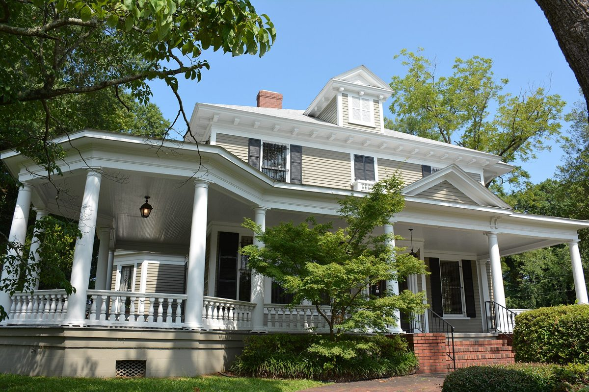
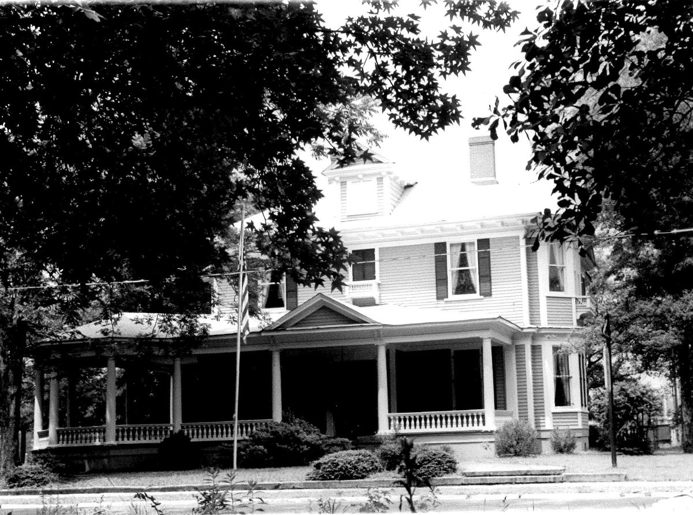

330 Dick Street — William McDiarmid House — Broker Price Opinion

The William McDiarmid House is a c.1907 American Foursquare-style house in downtown Fayetteville, a short walk from the county courthouse. It has about 6,901 SF of heated space on two floors and was used for decades as a law office. The house is listed on the National Register of Historic Places. This report values the house and the paved parking lot next to it as one property: 0.54 acres in total, zoned OI (Office & Institutional). The building is in okay, habitable condition with some deferred maintenance. It needs new or repaired flooring and fresh paint, and possibly some electrical and plumbing upgrades. Its heating and air systems have been replaced and appear to work.
The price opinion of $575,000 for both parcels is about $83 per SF of heated building area, within a value range of $525,000–$600,000. It reflects the building's current condition, before the updates it needs. This is a broker's opinion of value for marketing purposes, not a certified USPAP appraisal.
Subject property summary
Parking parcel: REID 0437621482000 / PIN 0437-62-1482, "Parking Lot Dick St," 0.26 ac, county land class Commercial. The parking parcel is paved and is directly next to the house.
The parcels are valued here as one property (0.54 ac in total).
Sources: Cumberland County records for the building parcel, its building card, and the parking parcel. Condition is as reported by the owner and was not inspected for this report.
Historic status

William McDiarmid, a lumber dealer who also made sashes and blinds, built the house around 1907. Its design combines an American Foursquare form with Late Victorian and Colonial Revival details. These include a wraparound porch with Tuscan columns and a pentagonal, gazebo-like corner, modillion cornice trim, diamond-paned upper window sashes and six classical mantels. Rufus C. Brown owned it from 1925 to 1940. From the 1940s to the early 1970s, Ada Beasley ran it as a boarding house. Attorney Earl Parks Bandy then converted it to law offices, which remained its use for many years.
The house was individually listed on the National Register of Historic Places on 7/7/1983 (#83001863). The City of Fayetteville also lists it as a local historic landmark.
What landmark status means for a buyer
- Exterior review. Exterior changes need a Certificate of Appropriateness (COA) from the Historic Resources Commission before the city reviews building permits. This covers siding, windows, roofing, outdoor mechanical equipment, and changes to the parking or site. Interior work is not reviewed.
- Approval track record. The commission approved 194 of the 197 COA cases it heard from 2021 to 2025.
- Demolition can be delayed by up to 365 days.
Financial benefits
- Property tax deferral. The landmark parcel is taxed on 50% of its value. If the building's historic significance is lost or impaired, the last three years of deferred taxes plus interest become due.
- Income-producing rehab credits. A certified rehabilitation can earn a 20% federal credit and a 15% NC credit, plus a 5% state bonus in Tier 1 and Tier 2 counties. Cumberland County is Tier 1 for 2026, so the combined credit is potentially up to 40% of qualified rehab costs. The work must meet the Secretary of the Interior's Standards, and spending must exceed the building's adjusted basis within 24 months.
- Owner-occupied residence: a 15% NC credit, capped at $22,500.
Sources: NPS National Register record, 1982 National Register nomination (NC HPO), Wikipedia, 2015 photo by Apc106, CC BY-SA 3.0, Fayetteville historic districts and local landmarks, City development guide (COA), City historic preservation, HRC COA activity report, G.S. 105-278, Cumberland County historic deferment, NC HPO income-producing credits, NC HPO homeowner credits, NC Commerce 2026 county tiers. Credit eligibility depends on NPS and HPO approval of the specific project. A buyer should consult a tax adviser.
Zoning — OI flexibility
- By right in OI: offices and professional services, upper-story dwellings, live/work units, two- to four-family dwellings, multi-family housing and single-family detached homes. A pending text amendment (File 26-0379) would remove single-family detached as a permitted use.
- Density: mixed-use development in OI allows up to 24 units per acre, with a 10,000 SF minimum lot. On paper, the 0.54-acre combined site could support about 12 units. In practice, the historic building and the need for parking limit what can be built.
- Likely buyers: an owner-user office (law, title, insurance, nonprofit), a professional-office building with several tenants, or a conversion to residential units under historic rehab credits. The adjoining parking lot is a real advantage downtown, where most older houses converted to offices have little on-site parking.
Sources: Fayetteville UDO use table, live/work standards, OI dimensional standards, File 26-0379. A written zoning determination is recommended before marketing a specific use.
Methodology and verification basis
- Comps were researched independently from Cumberland County deed and sale records. Each price was checked against the excise stamps on the deed. They are older office buildings, house-to-office conversions and local landmarks in downtown and along the Hay St corridor that sold from 2021 to 2025.
- Excluded: 713 Hay St (a 2/2026 foreclosure deed, discussed under counter-evidence), 1104 Hay St (bought by an institutional buyer, CFRT), 214/208 Rowan St (a multi-parcel package), 308/310 Green St ($0 stamps), and 1015 Arsenal Ave (unclear package).
- Comps are adjusted to the subject as is: habitable, with deferred maintenance and updates needed. Adjustments are percentages applied to price per SF of heated area and reflect the broker's professional judgment. An as-updated residual analysis serves as a cross-check.
- Price per SF covers both parcels, and the parking lot is treated as part of the subject's site. Comps with little on-site parking are adjusted for that difference.
Source: Cumberland County market-area sales.
Comparable sales — downtown / Hay St
| Comp | Sold | Price | Bldg SF | $/SF | Acres | Built | Distance |
|---|---|---|---|---|---|---|---|
| C1. 219 Dick St Wood-frame office | 7/2021 | $380,000 | 4,143 | $91.72 | 0.56 | 1917 / eff. 1970 | 0.13 mi |
| C2. 911 Hay St Masonry medical office | 1/2025 | $600,000 | 7,466 | $80.36 | 0.62 | eff. 1954 | 1.09 mi |
| C3. 709 Hay St House-style office | 10/2025 | $550,000 | 3,836 | $143.38 | 0.34 | 1920 / rem. 2008 | 0.80 mi |
| C4. 645 Hay St House-style office | 1/2022 | $975,000 | 7,141 | $136.53 | 1.14 | 1926 | 0.74 mi |
| C5. 916 Hay St Local landmark house | 12/2023 | $335,000 | 2,979 | $112.45 | 0.42 | 1848 / eff. 1970 | 1.13 mi |
| C6. 159 Maxwell St Local landmark warehouse, offices and apartments | 8/2021 | $1,024,500 | 10,400 | $98.51 | 0.29 | 1900 / ren. 2014 | 0.29 mi |
| C7. 115 Broadfoot Ave Masonry office | 7/2021 | $158,000 | 6,147 | $25.70 | 0.31 | eff. 1965 | 1.29 mi |
Sources: Cumberland County records for 219 Dick St, 911 Hay St, 709 Hay St, 645 Hay St, 916 Hay St, 159 Maxwell St, 115 Broadfoot Ave. Prices were checked against deed stamps. Distances are straight-line from the subject.
Adjustment matrix
Each comp is adjusted to the subject: a c.1907 National Register house of 6,901 SF on two floors, in okay, habitable condition with some deferred maintenance (flooring, paint, possible electrical and plumbing updates) and working heating and air, on 0.54 acres (building lot plus its own parking lot) in the downtown courthouse area. Time is adjusted at +2% per year.
| Comp property | Unadj. $/SF | Net Adj. % | What was adjusted | Adj. $/SF |
|---|---|---|---|---|
| C1. 219 Dick St | $91.72 | 0% | Location: same street, a block away (0%). Time: about 5.3 years ago (+10%). Condition: an occupied office at the time of sale; the subject is in okay condition but needs flooring, paint and some system updates (−5%). Size: smaller, which sells for more per SF (−5%). Site: similar land and parking (0%). | $91.72 |
| C2. 911 Hay St | $80.36 | −2% | Location: Hay St corridor, with more traffic exposure (−5%). Time: about 1.8 years ago (+4%). Condition: an occupied medical office of similar age and upkeep (−3%). Size: similar (0%). Site: larger 0.62-ac lot (−3%). Character: a plain one-story masonry building, with no historic appeal (+5%). | $78.75 |
| C3. 709 Hay St | $143.38 | −18% | Location: similar (0%). Time: about 1 year ago (+2%). Condition: remodeled in 2008 and move-in ready (−15%). Size: about half the subject's size (−10%). Site: smaller lot with less parking (+5%). | $117.57 |
| C4. 645 Hay St | $136.53 | −16% | Location: similar (0%). Time: about 4.8 years ago (+9%). Condition: a well-kept, higher-grade 1926 house (−15%). Size: similar (0%). Site: 1.14 ac with ample parking (−10%). | $114.69 |
| C5. 916 Hay St | $112.45 | −13% | Location: Haymount, farther from the courthouse (−3%). Time: about 2.8 years ago (+6%). Condition: usable, effective year 1970, a little better kept (−8%). Size: much smaller (−8%). Historic: also a local landmark (0%). | $97.83 |
| C6. 159 Maxwell St | $98.51 | −5% | Location: core of downtown (−5%). Time: about 5.2 years ago (+10%). Condition: renovated in 2014 into offices and apartments (−20%). Size: larger, which sells for less per SF (+5%). Parking: little on-site parking compared with the subject's adjoining lot (+5%). Historic: also a local landmark (0%). | $93.58 |
| C7. 115 Broadfoot Ave | $25.70 | +45% | Location: secondary street (0%). Time: about 5.3 years ago (+10%). Condition: dated masonry office with heavy deferred maintenance, in clearly worse shape than the subject (+15%). Character: a plain building with no historic or architectural appeal (+15%). Site: similar size, with less parking (+5%). | $37.27 |
Adjusted range $37–$118/SF. Leaving out the C7 outlier, the range is $79–$118/SF. The median is $93.58/SF and the weighted average is about $91.55/SF (C1 20%; C2, C4, C5 and C6 15% each; C3 and C7 10% each). C1, a block away on Dick St, needs no net adjustment at $91.72/SF. The concluded rate is $85/SF, a little below the weighted average. That leaves room for the update budget and the small pool of buyers for a 6,901 SF historic house.
As-updated residual cross-check
| Line item | Basis | Amount |
|---|---|---|
| Stabilized rent after updates | 6,901 SF × $15.50/SF gross | $106,966 |
| Vacancy and credit loss | 10% | −$10,697 |
| Operating expenses | 35% of effective income | −$33,694 |
| Stabilized NOI | $62,575 | |
| Value after updates | 7.75%–8.25% cap rate, about $780,000 (about $113/SF) | $758,000–$807,000 |
| Less: updates and deferred maintenance | $15–$30/SF: flooring, paint, electrical and plumbing upgrades, exterior touch-up (HVAC already replaced) | −$104,000 to −$207,000 |
| Less: buyer profit, carry and lease-up | About 10% of value after updates | −$78,000 |
| Indicated as-is value | $495,000–$598,000 |
Rent evidence: 2,200 SF of office space at 310 Dick St, next door, asks $15.82/SF (LoopNet downtown listings), and 1003 Hay St asks $16.00/SF (LoopNet). Office condos at 321 Dick St are listed at $158,900 each (Realmo). Rents, costs and cap rates are broker estimates, not bids or contractor quotes. An update of this size may not meet the federal credit's substantial-rehabilitation test, so no historic credits are counted here. An owner-user who does not need an investor's profit can justify a price toward the top of the range.
Value analysis & opinion of value
| Approach | Indication | Weight |
|---|---|---|
| Sales comparison: 6,901 SF × $85/SF | $586,585 | Primary |
| As-updated residual (investor view) | $495,000–$598,000 | Support |
| 2021 purchase of both parcels, trended at +2% per year | $365,000 → about $403,000 | Support |
| County 2026 value, both parcels, before deferral | $618,876 | Reference only |
The value range of $525,000–$600,000 (about $76–$87 per SF) runs from the middle of the investor residual to just above the sales comparison. The broker price opinion of $575,000 covers both parcels and sits in the upper half. It is about 58% above the 2021 purchase price and about 7% below the county value. Because the building is habitable, an owner-user can move in while updating in phases, and the adjoining parking lot supports the price.
Counter-evidence & upside
- Update scope drives the value. Each $10/SF change in the update budget moves an investor's value by about $69,000. If inspections find larger electrical, plumbing, roof or structural needs, the value moves toward the low end or below it. Before marketing, a contractor walk-through and scope would narrow the range.
- Below the value: both parcels sold for $365,000 in 9/2021, and that price trended forward is about $403,000. 713 Hay St went back to the lender in a $372,000 foreclosure (2/2026, about $97/SF), and 115 Broadfoot Ave, a dated office, sold for about $26/SF. Downtown office demand is thin, and buyers of large older houses are few.
- Landmark constraints. Exterior work, including windows, siding, roofing and site changes, needs a COA, which adds time and design cost. Getting tax credits requires NPS and HPO approval and adds compliance costs. Removing the building or impairing its historic significance would trigger repayment of three years of deferred taxes plus interest.
- Size and layout. 6,901 SF in a house layout suits one large user or several small suites. Upper-floor access and life-safety upgrades (exits, possibly sprinklers or an elevator for some uses) may be needed depending on occupancy.
- Upside: parking and location. A 0.26-acre paved lot next to the building is rare in the courthouse area and supports a law, title or professional-office user. 219 Dick St, a block away, sold for about $92/SF while occupied.
- Upside: habitable now. A buyer can occupy or lease the building while updating it in phases. The landmark parcel is taxed on 50% of its value, and a buyer planning a larger certified rehab could also apply for the historic credits.
- Upside: the HVAC has been replaced and appears operable, which keeps the update budget well below what most buildings of this age need.
Listing / commission terms
Sale listing
8% co-brokered — of the gross sale price when a cooperating broker procures the buyer, split under standard commercial co-brokerage practice.
6% in-house — when Grant-Murray Real Estate, LLC procures the buyer directly.
Offering approach
Market both parcels together at $575,000 to owner-users (law, title, insurance and nonprofit offices) and investors. Feature the National Register listing, move-in-ready habitability, the tax deferral, the adjoining parking lot and the location near the courthouse. Before launch, consider low-cost cosmetic work (paint, carpet cleaning or replacement) to improve showings. Also get a measured floor plan, a contractor estimate for the remaining updates, and current interior photos.
Listing broker: Patrick Murray, CCIM, SIOR, Grant-Murray Real Estate, LLC. Final listing terms, duration and marketing-cost provisions will be set out in a separate written listing agreement.
Limitations
- Owner-reported condition. The building's condition (habitable, with deferred maintenance) and the working condition of its HVAC are as reported by the owner. They were not inspected for this report. Heated area (6,901 SF) comes from the county card and was not measured. Another public source lists 7,207 SF.
- Historic status. The National Register and local landmark status come from NPS, NC HPO and city records. The landmark boundary, whether it includes the parking parcel, and credit eligibility should be confirmed with the city and HPO.
- Comp data. Comp sizes, ages and prices come from Cumberland County records and deed stamps and were not confirmed with buyers or sellers. Interior condition at the time of sale is unknown.
- Residual inputs. Rents, update costs and cap rates are broker estimates, not bids or contractor quotes.
- No title search, survey or environmental review was performed. Older buildings may contain lead paint or asbestos.
- This is a broker's opinion of value for marketing purposes, prepared by Grant-Murray Real Estate, LLC. It is not a certified USPAP appraisal.
Prepared by
Patrick Murray, CCIM, SIOR
Principal / Broker in Charge
Grant-Murray Real Estate, LLC
150 N. McPherson Church Rd
Fayetteville, NC 28303
O: 910.829.1617
patrick@grantmurrayre.com
grantmurrayre.com
Prepared for
Gardeavant Properties LLC
Owner of record
210 Woodside Ave
Fayetteville, NC 28301
This Broker Price Opinion (BPO) is prepared by Patrick Murray, CCIM, SIOR, of Grant-Murray Real Estate, LLC. It is not an appraisal and is not a certified valuation under USPAP. The conclusion uses the sales comparison approach on independently researched closed sales in downtown Fayetteville and along the Hay St corridor, with an as-updated residual cross-check. Adjustments reflect the broker's professional judgment.